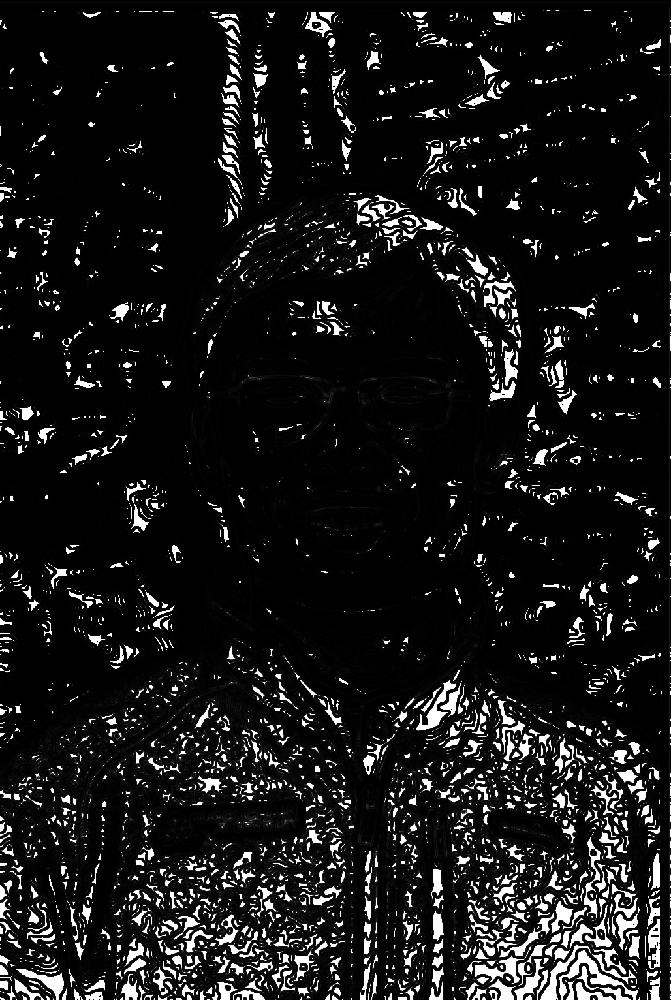
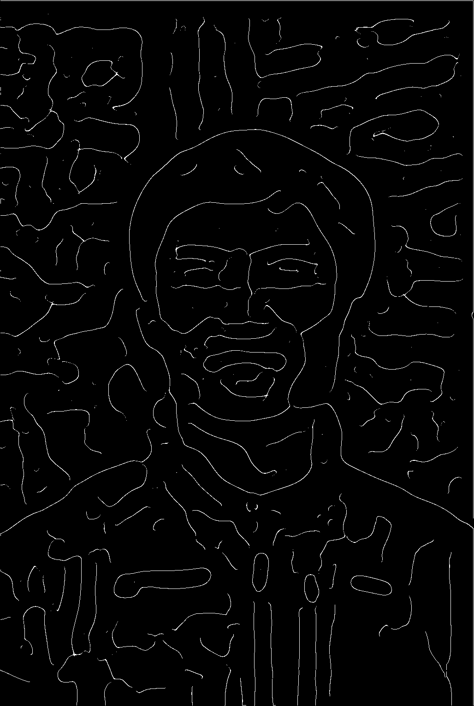
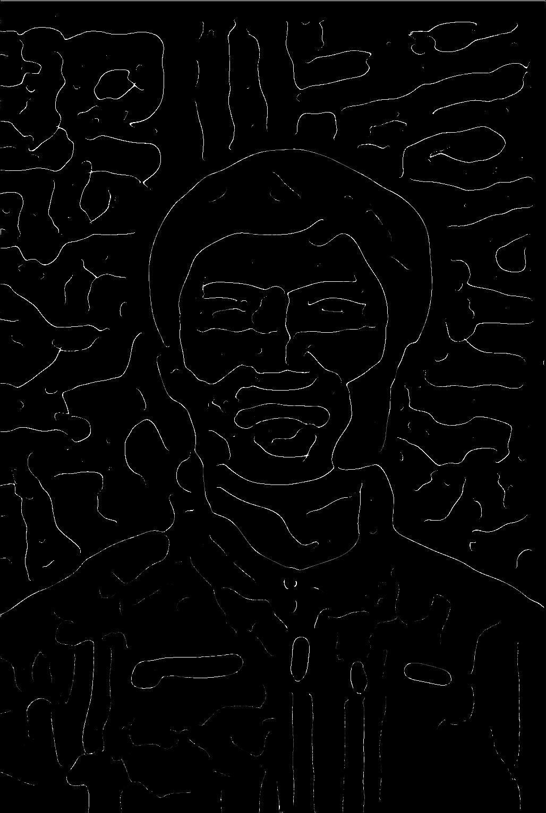

We worked on three approaches to implmenting a depth map, each from
a different paper. Our experiments have been giving us more intuition
about the depth map problem, and should hopefully allow us to continue
more productively.
Technical Approach
Enhanced Image Gradients
We first tried a method from
this paper
that tries to find a depth map with gradients close to the original image gradient.
The assumption is that the gradients in the depth map should match up
to the gradients in the image. The paper suggests and error function
relating the image gradient to the depth map gradients and provides a
closed form solution for the depth map.
Algorithm for constructing Depth Map from Bala et. al
Original
Depth Map
However we found that this method gave us a weak, and frankly horrifying
depth map. This, at least in its current implementation, is a dead end for us.
Defocus map estimation
Overview of blur estimation approach, taken from Zhuo et. al
In this approach, we blur the image and take the ratio of the gradients
of the original image with the gradients of the blurred image. This ratio
gives us an estimation of the standard deviation of the original blur of a
region of the image, as we model out of focus areas as a gaussian blur.
This effectively gives us a "defocus map" which we can roughly equate to a
depth map.
Original
Gaussian Blurred Image

Ratio of original image gradient to blurred image gradient

Canny Edge Detector Edge Map

Sparse Defocus Map
We can see in the sparse defocus map that edges in the foreground are lighter than
those in the background. In this visualization, this means that the edges
in the foreground have original blurs less than those in the background,
and is a hopeful sign that we are on the right track.
INSERT MORE DETAIL ON FILLING IN SPARSE MAP
Using the constructed depth map, we get strong results on a variety of images. As reference, lighter portions of the image are closer to the camera
These results also allow us to construct visual effects on our results
Original image
Depth we generated
Foreground - background extraction
We can use these depth extractions for cool effects, which we will discuss later.
Enhancing bokeh effects for the picture
Ken Burns effect
Results
Out of the box depth estimation and effects
We also used out of the box depth estimation to test out some cool effects. We listed two we implemented below
Original Image
Depth mapping
3D Ken Burns Effect
Elements which are closer to the camera are zoomed in more than those farther away, simulating the camera moving closer to the image.
In addition, blown up closer versions of the image are laid over the images farther back. We mostly used an out of the box implementation for this part.
Artificial Lens Blur
We establish a focus point in the depth map. Because we only had relative depth measurements for depth, we assumed the image was focused at infinity.
We then simulated a thin lens effect by picking a point as our point of focus, and estimating the degree of blur using lens equations learned in class.
This technique is meant for cameras focused at infinity, and is effectively the 'inverse' of the idea of the defocus map - given a depth map, determine blur.
partially blurred image. We did a binary mask for now, but we are looking into fast methods of using proportional blur.
We then tried to these techniques with our own depth estimation
This is me going over the results we got so far in a more approachable format.
Next Steps
Our next steps are to follow through with the Defocus map estimation method
and finish interpolating from the sparse defocus map we have to a full
defocus map using laplacian matting. We will also have to implement the thin
lens model that we can use on the depth map once we have our completed depth map.
References
http://graphics.stanford.edu/papers/portrait/wadhwa-portrait-sig18.pdf - Google portrait mode paper